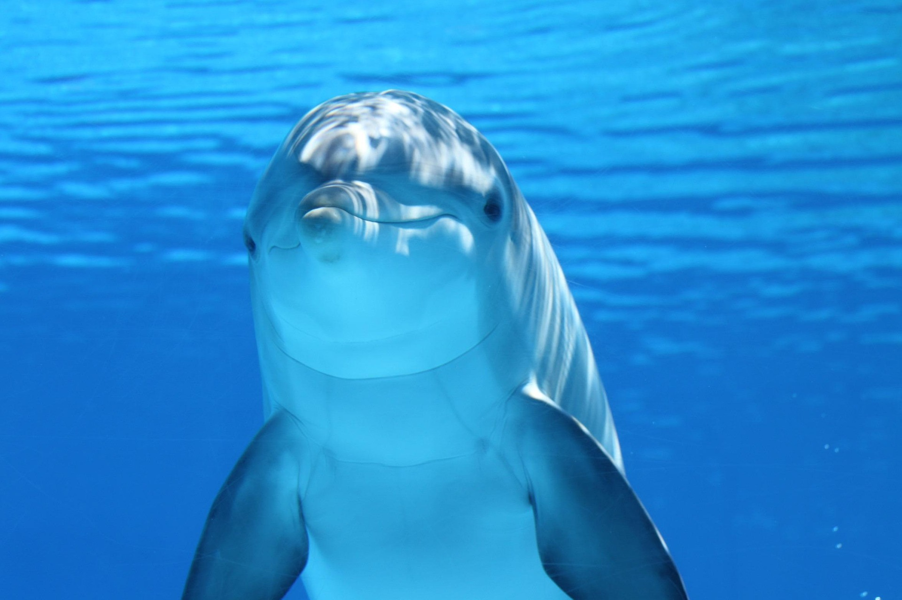
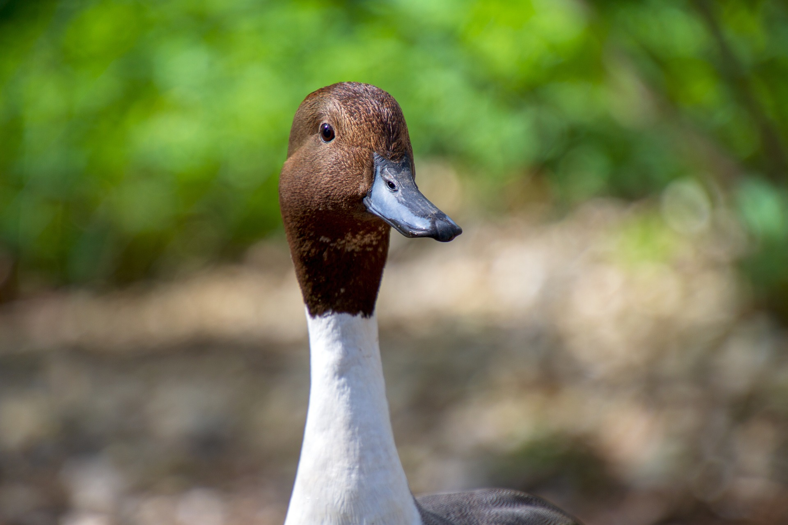

Resgatada de um circo ilegal, Andy aprendeu a viver livre novamente em nosso santuário. Hoje, ajuda outros primatas a se adaptarem à natureza com segurança.
Projetos
Macaca Andy:

Golfinho Marcus:
Marcus foi encontrado ferido após um derramamento de óleo. Reabilitado com fisioterapia aquática, agora simboliza nossa luta pela preservação dos oceanos.
Pato Jack:
Abandonado em um lago poluído, Duck sobreviveu graças ao resgate rápido da nossa equipe. Hoje vive em um ambiente limpo e inspira ações contra o descarte irregular de lixo.